AI는 독서 활동을 넓히는 도구다
아이디어 찾기, 정보 탐색, 정리와 요약, 이미지 만들기, 발표자료 만들기처럼 독서 활동의 여러 단계에 AI를 붙일 수 있습니다. AI가 활동을 대신하는 것이 아니라 학생이 생각을 더 멀리 끌고 가도록 돕는 자리에 둡니다.
자료실 / AI 독서리터러시
학생이 꿈꾸는 직업을 AI와 함께 조사하고, 자기 이야기를 그림책 한 권으로 엮어 보는 독서 활동입니다. 특강에서 배운 흐름을 단계별로 다시 정리하고, 같은 방법으로 ChatGPT와 Google Flow를 써서 직접 만들어 본 기록과 수업에 옮길 때 생각할 점을 붙였습니다.
2026. 11. 9. 전남대학교에서 열린 AI 독서리터러시 현장전문가 특강(이동찬 사서교사, 순창제일고등학교)의 내용과 방법을 바탕으로 정리했습니다. 강의 자료를 옮긴 것이 아니라, 들은 내용을 실습해 보며 제 말로 다시 쓴 것입니다. 도구 화면과 이용 조건은 2026. 11. 기준이며 자주 바뀝니다.
도구 사용법보다 먼저 짚은 것들입니다. 그림책 활동 밖에서도 그대로 통합니다.
아이디어 찾기, 정보 탐색, 정리와 요약, 이미지 만들기, 발표자료 만들기처럼 독서 활동의 여러 단계에 AI를 붙일 수 있습니다. AI가 활동을 대신하는 것이 아니라 학생이 생각을 더 멀리 끌고 가도록 돕는 자리에 둡니다.
"사서교사에 대해 알려 줘"처럼 물으면 누구에게나 같은 일반론이 돌아옵니다. 왜 알고 싶은지, 무엇을 알고 싶은지, 어느 수준으로 설명해 주면 좋을지를 넣어야 내게 맞는 답이 나옵니다.
진로 안내에서 실제 양성 학과를 빠뜨리거나 관련이 적은 학과를 넣는 일이 생깁니다. AI가 대신 써 준 프롬프트에도 같은 내용이 두 번 들어가는 등 허점이 있습니다. 확인하는 습관 자체가 이 활동의 정보리터러시 교육입니다.
AI로 도서 추천 챗봇을 만들어도 무엇을 근거로 추천할지는 사서가 정해야 합니다. 사서가 고른 도서 목록 안에서만 추천하고, 확인할 수 없는 정보는 지어내지 않게 하는 원칙을 적어 주는 일이 사서의 몫입니다.
장면마다 주인공의 얼굴이 달라지면 이야기가 이어지지 않습니다. 주인공에게 이름을 붙이고, 외모와 옷차림을 한 줄로 정해 두고, 기준 그림과 여러 방향에서 본 그림(턴어라운드)을 만들어 장면마다 함께 넘기는 것이 요령입니다. 글은 그림에 넣지 않고 편집 단계에서 따로 얹습니다.
모두 열일곱 걸음을 다섯 묶음으로 나눴습니다. 대화형 AI로 글과 설계를 만들고, 이미지 도구로 그림을 만들고, 편집 도구로 책을 엮습니다.
대화형 AI에게 묻는 글과 그림 도구에 넣는 글은 짜는 방식이 다릅니다.
나는 공공도서관 사서가 되고 싶은 고등학생이야. 공공도서관 사서가 하는 일, 필요한 역량, 관련 학과와 준비 과정, 앞으로 지역 독서문화에서 달라질 점을 고등학생이 이해하기 쉽게 정리해 줘. 마지막에는 지금부터 해 볼 수 있는 활동도 알려 줘.
노란 부분만 자기 진로로 바꿔 씁니다. 제가 실습에 맞게 다시 쓴 예시입니다.
"사서 선생님 그려 줘" → 나이도 옷도 장소도 AI 마음대로 정해집니다. "햇살이 드는 공공도서관 독서 모임 탁자에서, 검은 단발머리의 30대 남자 사서가 어르신과 어린이의 이야기를 웃으며 듣고 있는 장면, 인물 중심의 세로 구도, 따뜻한 파스텔 색감의 한국 웹툰풍 그림책 삽화, 글자 없음" → 원하는 장면에 훨씬 가까워집니다.
구글의 이미지 모델 안내도 '피사체, 동작, 장소나 상황, 구도, 스타일'을 차례로 서술하라고 권합니다.
특강 날 같은 순서로 따라 해 보았습니다. 주인공은 저 자신, 진로는 '공공도서관 사서'로 잡았습니다.
| 제목 | 『책과 삶을 나누는 공공도서관과 함께』 (AI가 처음 붙인 제목을 바꿔 달라고 해서 정함) |
|---|---|
| 분량 | 8장면, 표지와 글자 페이지 배경 따로 |
| 그림체 | 처음에는 수채화 그림책풍을 추천받았지만, 주인공의 밝은 성격이 잘 드러나도록 감성 웹툰풍으로 바꿈 |
| 도구 | ChatGPT 무료 계정(조사, 이야기, 주인공 묘사, 주인공 그림, 턴어라운드, 표지, 장면 프롬프트, 글자 배경), Google Flow(장면 그림 19장) |
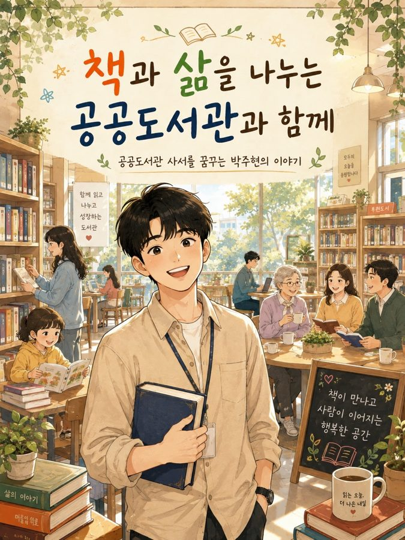
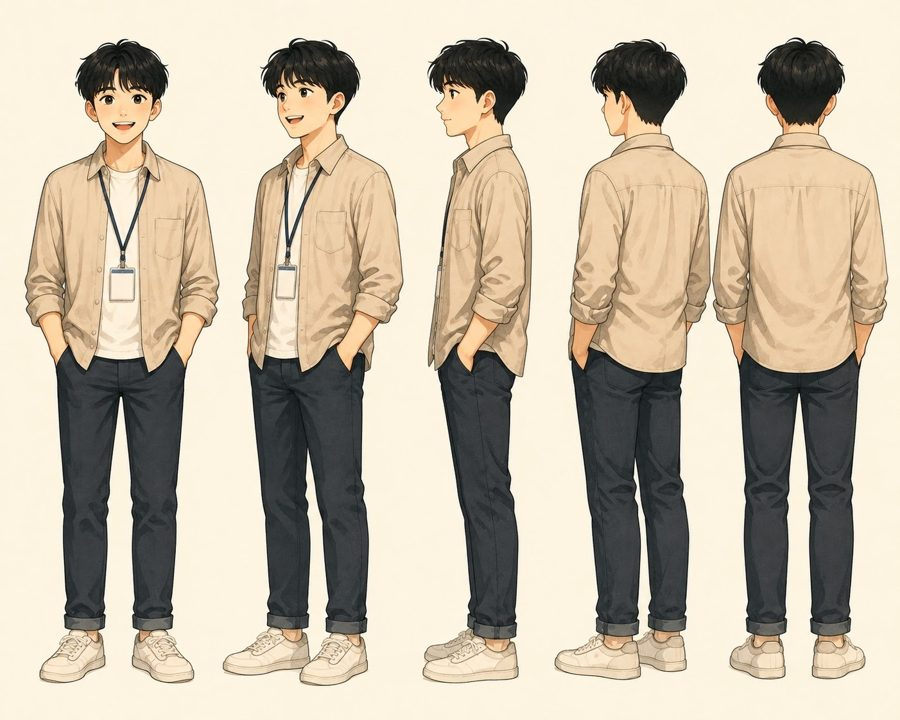
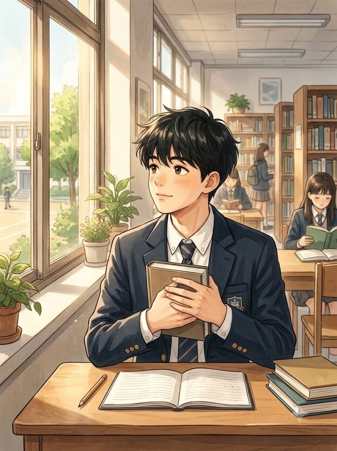
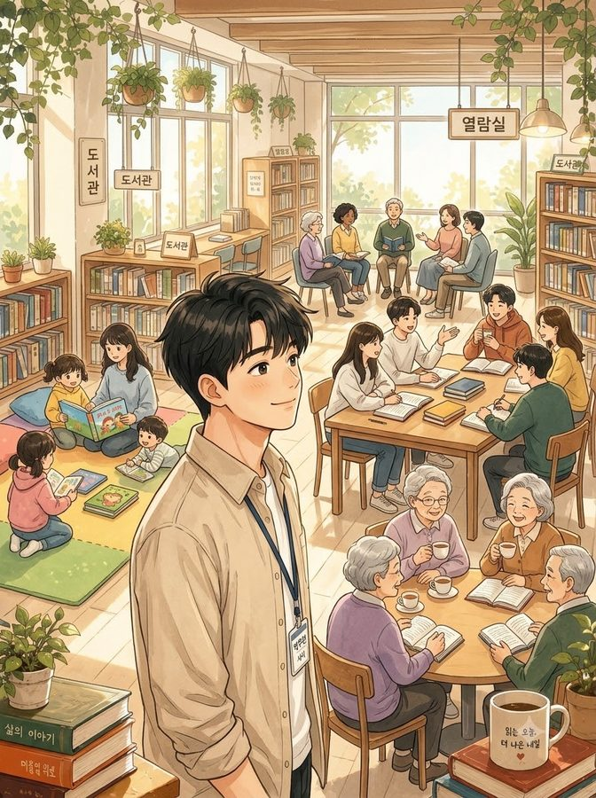
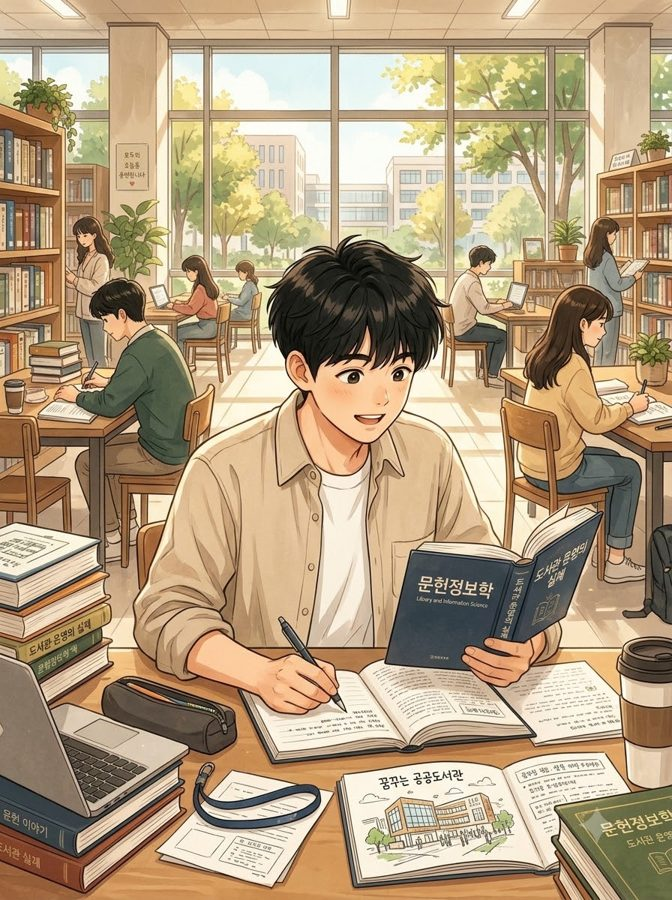
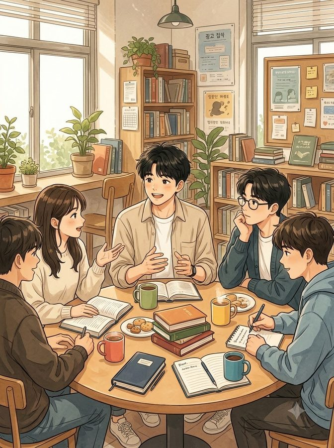
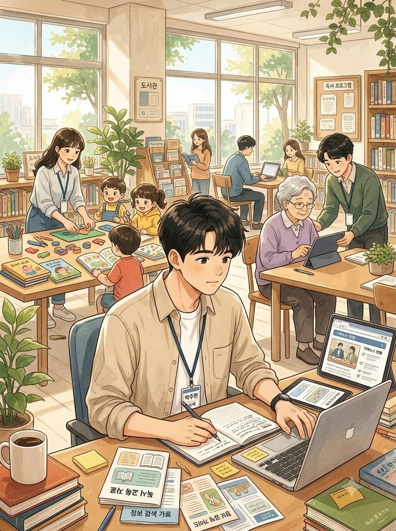
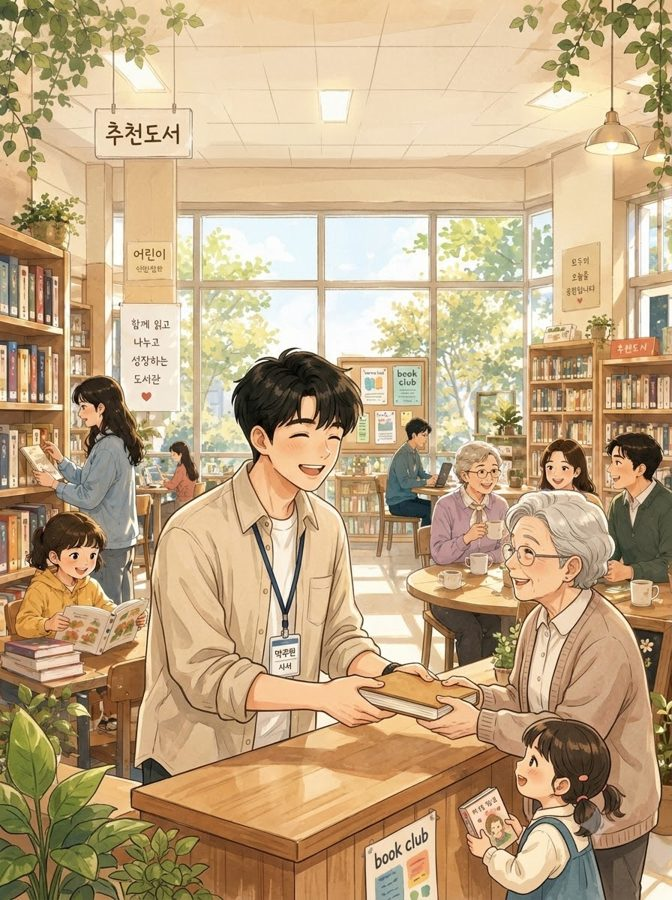
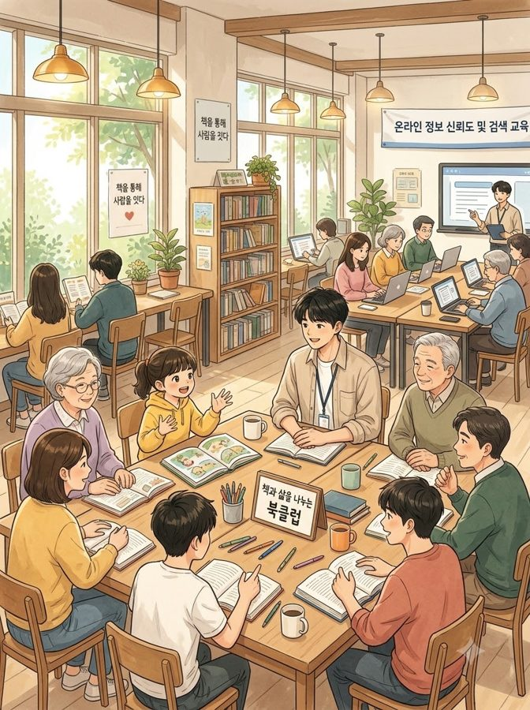
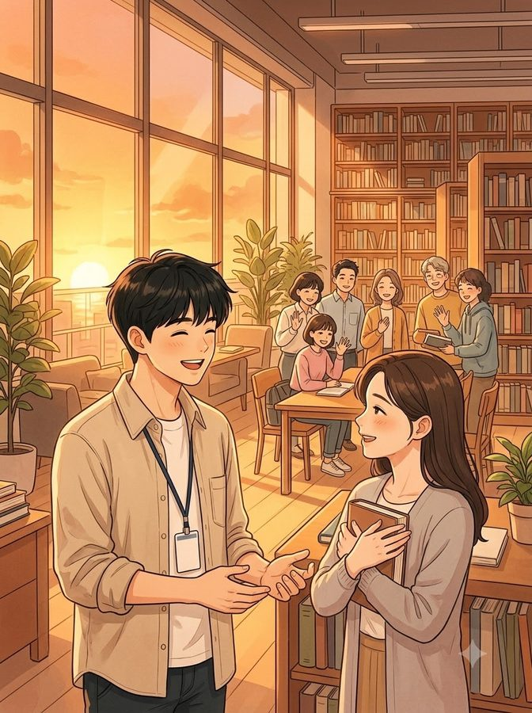
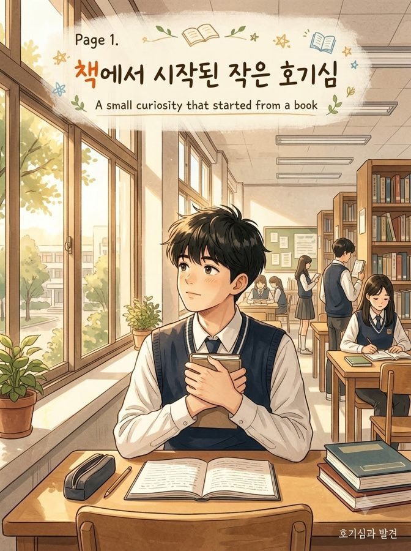
| 장면 | 내용 | 담은 감정 |
|---|---|---|
| 1 | 고등학교 도서관 창가에서 책을 읽다가, 같은 책을 읽은 사람들은 무슨 생각을 했을지 궁금해진다 | 호기심 |
| 2 | 공공도서관에서 어린이, 청년, 어르신이 책으로 이야기 나누는 모습을 보고 도서관이 사람을 잇는 곳임을 깨닫는다 | 공감 |
| 3 | 대학 도서관에서 문헌정보학을 공부하며 꿈꾸는 도서관을 그려 본다 | 결심 |
| 4 | 친구들과 독서 모임을 꾸리며 서로 다른 생각을 듣는 법을 배운다 | 성장 |
| 5 | 도서관 실습에서 어린이 독서 활동과 어르신 디지털 안내를 준비하고, 온라인 정보의 출처를 따져 보는 법도 익힌다 | 책임감 |
| 6 | 공공도서관 사서가 되어 이용자를 맞이한다 | 설렘 |
| 7 | 여러 세대가 함께하는 독서 모임에서 가르치기보다 이야기를 잇는 역할을 한다 | 공동체 |
| 8 | 해 질 녘, 책을 안고 돌아가는 시민과 웃으며 인사한다. 이야기는 계속된다 | 보람 |
강의 내용과 실습 경험을 합쳐, 학교도서관 수업이나 사서 연수에 쓸 때 미리 정해 두면 좋은 것들입니다.
| 도구 | 맡은 일 | 알아 둘 점 |
|---|---|---|
| ChatGPT | 진로 조사, 인터뷰, 이야기, 주인공과 그림체 묘사, 주인공 그림, 턴어라운드, 표지, 장면 프롬프트 | 무료 계정은 이미지 생성 횟수와 대화 길이에 한도가 있음. 이미지 만들기는 입력창 + 메뉴에서 고름 |
| Google Flow | 장면 그림 만들기 | 구글 계정으로 씀. 이미지 모드, 3:4, 두 장씩, 에이전트 끔, 참고 이미지 올리기 |
| Canva | 판형 잡기, 그림과 글 앉히기, PDF 저장 | 맞춤형 크기 154×216mm(A5와 재단 여백) |
| Heyzine | PDF를 넘겨 보는 전자책 링크로 바꾸기 | 로그인하지 않으면 보관 기간이 짧음 |
| Google AI Studio | (넓혀 쓰기) 도서 추천 챗봇 만들기 | 원칙과 도서 목록은 사서가 정해서 넣음 |
이 페이지는 이동찬 사서교사(순창제일고등학교)의 특강 「생성형 AI를 활용한 진로 그림책 만들기」(2026. 11. 9., 전남대학교)에서 배운 흐름을 바탕으로 박주현이 실습하며 정리했습니다. 강의 자료의 문구와 그림은 옮기지 않았습니다.